Unraveling Literary Success - A Comparative NLP Analysis of Popular and Unpopular Science Fiction Novels
Ubaydul H Sami
Department of Computer Science, Lehman College, CUNY
Introduction
Explore the fascinating intersection of literature and technology with our poster presentation, where we use Natural Language Processing (NLP) to analyze the reasons behind the varying levels of success of two science fiction novels. We compare “The Time Machine” by H.G. Wells, which is widely acclaimed, with “The Planet Mappers” by E. Everett Evans, a lesser-known work.
 H.G. Wells’s novel
H.G. Wells’s novel The Time Machine follows a Victorian scientist who invents a device to travel through time. In the year 802,701 AD, he discovers humanity has evolved into two races: the gentle Eloi and the predatory Morlocks. After his time machine is stolen and his Eloi friend Weena dies, he then travels further into the future, witnessing Earth’s gradual decline. Thirteen million years into the future, he finds a cold, desolate Earth. Upon his return, his story is met with skepticism. He departs on another journey and never returns, leaving behind only two mysterious flowers as evidence of his travels.
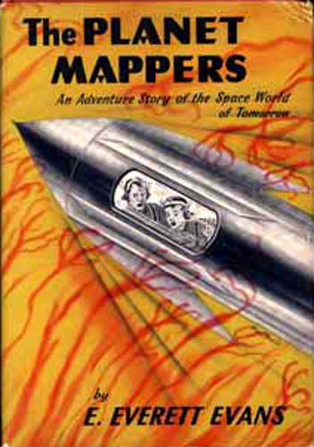
In The Planet Mappers by E. Everett Evans, Jon, and Jak, along with their parents, embark on a mission to map uncharted planets. During their perilous journey, their father sustains a serious injury, adding urgency and tension to their quest. Despite this setback, the family perseveres, facing challenges together as they navigate through alien landscapes and encounter unexpected dangers. The father’s injury serves as a pivotal moment in the story, highlighting the risks involved in their mission and the teamwork and resilience of the characters as they strive to overcome adversity.
Objectives
- Compare linguistic and thematic content of both books.
- Identify factors influencing reader reception of sci-fi literature.
- Inform future sci-fi writer by providing insights into factors influencing literary recognition.
Methods
To begin, the full text for both book were retrieved from Project Gutenberg. We then focused on the core narrative by removing extraneous content like introductions and copyright information through text cleaning. Next, each sentence was broken down into individual words, a process known as tokenization. Finally, the stemming algorithm was applied to these tokens to reduce words to their root form.
These initial preprocessing steps prepare the textual data for further NLP analysis, where we can explore linguistic features and thematic elements that might contribute to a novel’s reception by readers.
Results
Word Distribution
Top 10 word counts & Top 25 Word Distribution Showed Below: 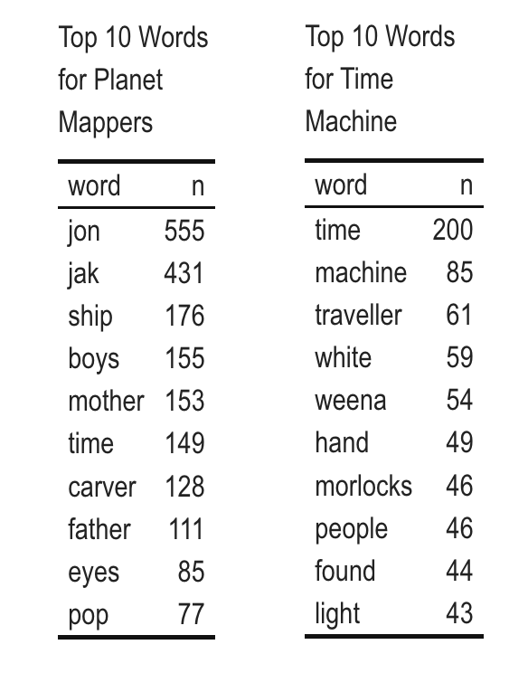 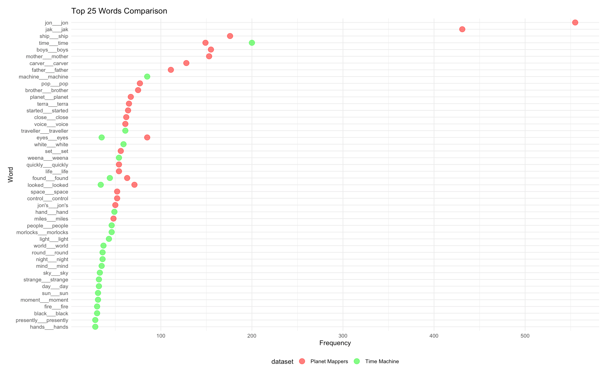
The data shows that in Planet Mappers, the top words exhibit significantly more repetition than in The Time Machine. In The Time Machine, the top word ‘time’ appears 200 times, while most of the top 25 words appear fewer than 50 times. In contrast, The Planet Mappers features the words ‘jon’ and ‘jack’ 555 and 431 times, respectively, with nearly all top 25 words exceeding 50 occurrences. This excessive repetition in The Planet Mappers book could negatively impact its readability and contribute to its lesser success compared to The Time Machine book.
Word Distribution for Each Chapter the books shown Below:
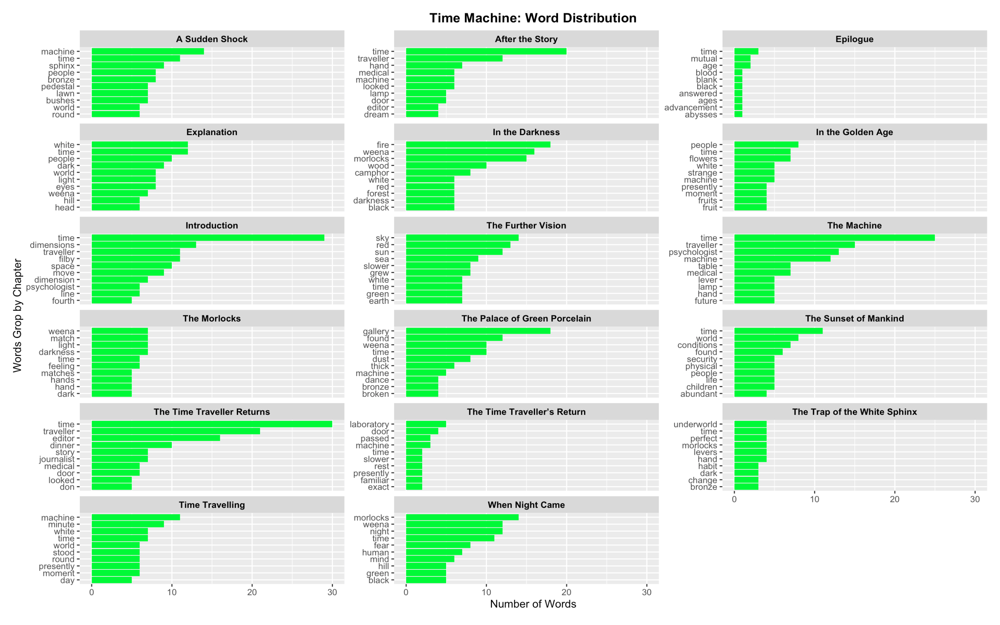
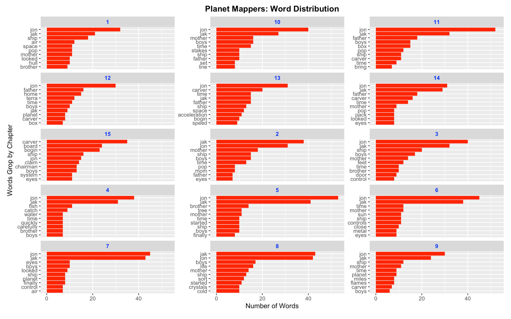
In The Planet Mappers, the top words are repeated across all chapters, indicating less variation and a focus on family-related terms. In contrast, The Time Machine features a wider variety of words, with scientific terms that vary by chapter. This greater lexical diversity in ‘The Time Machine’ book could enhance reader engagement and contribute to its success, while the repetition in ‘Planet Mappers’ might negatively affect its reception.
Sentiment Analysis
Sentiment analysis allows us to interpret the words in a text as positive or negative, using standard lexicons to characterize individual words. Given the themes of teamwork and discovery in The Planet Mappers, we expect it to have more positive sentiment compared to The Time Machine, which involves themes of war and the end of the universe.
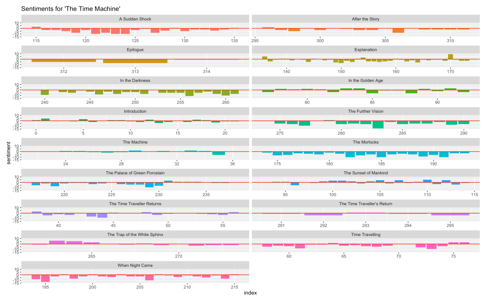
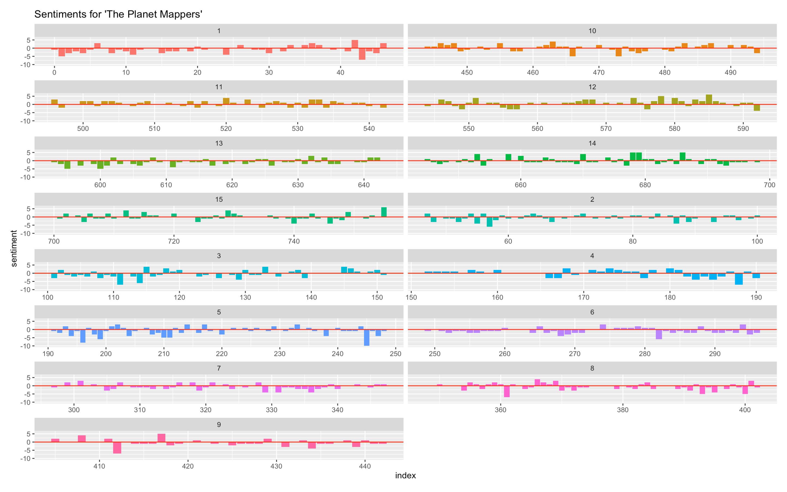
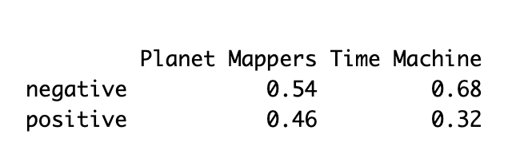
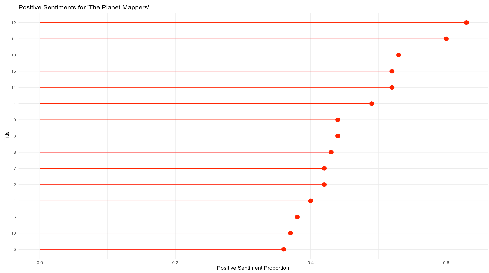
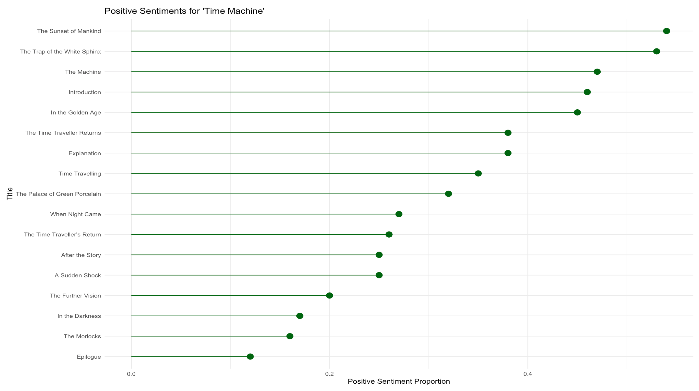
As expected, The Time Machine book is more negative than The Planet Mappers. The positive portions of ‘The Time Machine’ sentiment are mostly less than 50%, whereas ‘The Planet Mappers’ has a higher proportion of positive sentiment. In ‘The Time Machine’ book, all chapters have a stronger negative than positive sentiment, while ‘The Planet Mappers’ maintains a balance of both. This suggests that the negative tension or thrill in ‘The Time Machine’ may contribute to its greater popularity compared to ‘The Planet Mappers’.
Topic Models
Topic modeling is an unsupervised machine learning technique, aims to extract topics from large text datasets. Coherence and exclusivity are crucial concepts in this method. Using graphs of coherence and exclusivity, I determined the optimal number of topics for both “The Time Machine” and “The Planet Mappers.”
Optimal Number of Topics & Top 5 Words of Each Topics for Time Machine book:
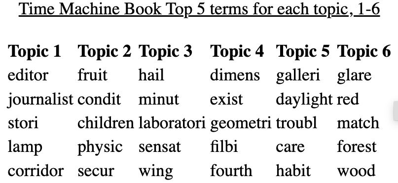
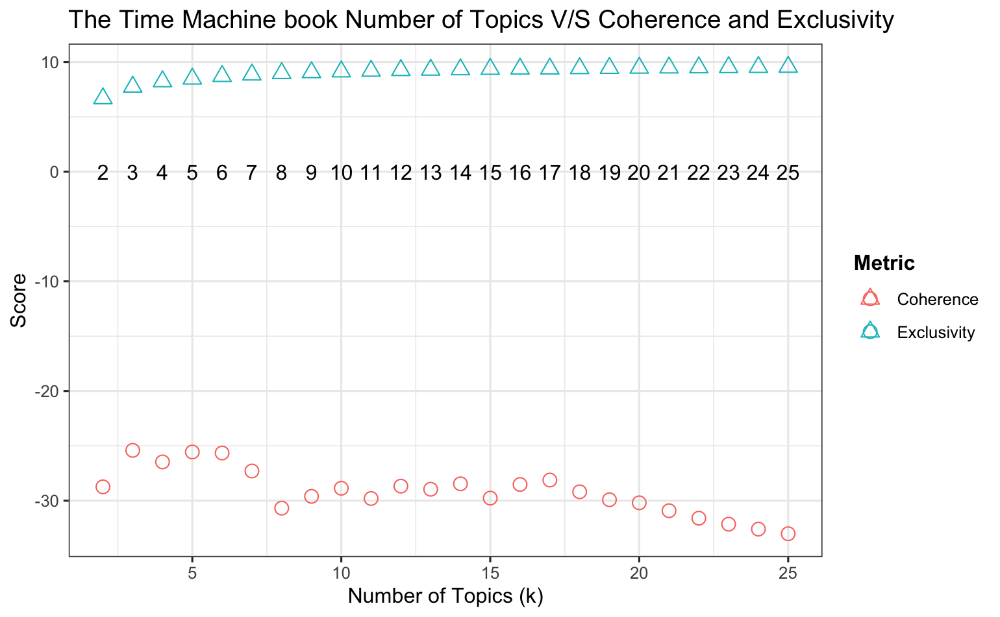
Optimal Number of Topics & Top 5 Words of Each Topics for Planet Mappers book:
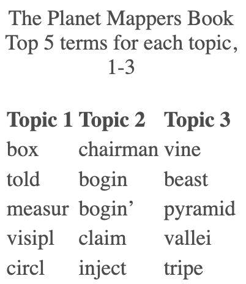
 By examining
By examining The Time Machine and The Planet Mappers, we found six distinct themes in H.G. Wells’ classic. These included the mechanics of time travel, the contrasting lifestyles of the Eloi and Morlocks, the desolate future Earth, and the existance of nature without humanity. Interestingly, “The Planet Mappers,” despite boasting a wider vocabulary, revealed only three themes: spaceship elements, leadership and medical concerns (possibly hinting at a father-son dynamic and a leadership challenge due to injury), and the dangers of space exploration.
This discrepancy suggests that “The Time Machine” offers a broader examination of scientific themes, potentially contributing to its popularity compared to “The Planet Mappers.”
Conclusion
Our comparative NLP analysis of The Time Machine and The Planet Mappers reveals that The Time Machine owes its popularity to greater lexical diversity, broader narrative complexity, and stronger emotional engagement. These factors enhance reader interest and contribute to its success. Despite having more words, The Planet Mappers covers fewer scientific concepts and lacks the narrative depth found in The Time Machine. This suggests that a rich variety of themes and emotional tension are critical to the success of science fiction novels, as demonstrated by our analysis.
Next Steps
I will conduct a sentence-level sentiment analysis to uncover the underlying emotions beyond just positive and negative sentiments. This deeper analysis will help us understand the nuanced emotional landscape of each book and its impact on reader engagement.
References
Hammond, John R. HG Wells’s The time machine: a reference guide. Bloomsbury Publishing USA, 2004.